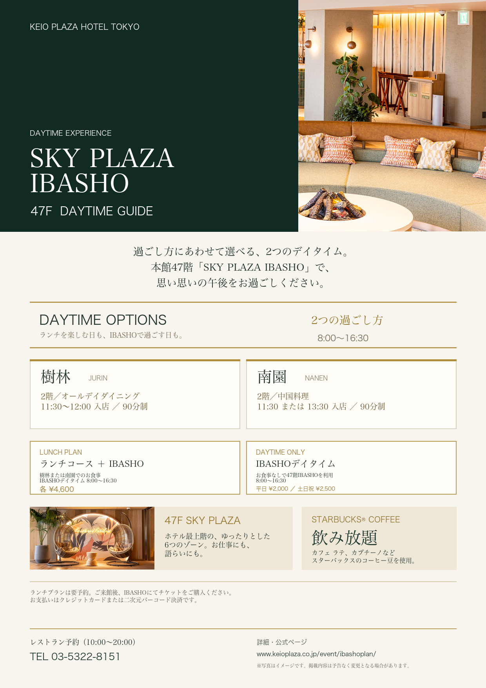

INFORMATION DESIGN / A4 FLYER
案内情報を、行動につながる一枚に
ホテル・施設・サービスの魅力と利用条件を整理し、知る、理解する、申し込むという流れを一枚の中でつなげます。
用途
ホテル、飲食店、施設、サービスの案内
受け取ったもの
公式ページのURL
AIで行ったこと
情報と画像の取得、内容整理、構成、コピー、デザイン、PDF・PNG出力

INFORMATION DESIGN / A4 FLYER
ホテル・施設・サービスの魅力と利用条件を整理し、知る、理解する、申し込むという流れを一枚の中でつなげます。
ホテル、飲食店、施設、サービスの案内
公式ページのURL
情報と画像の取得、内容整理、構成、コピー、デザイン、PDF・PNG出力
